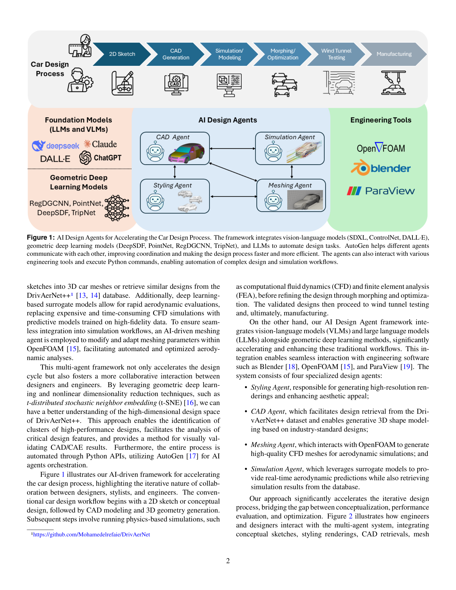
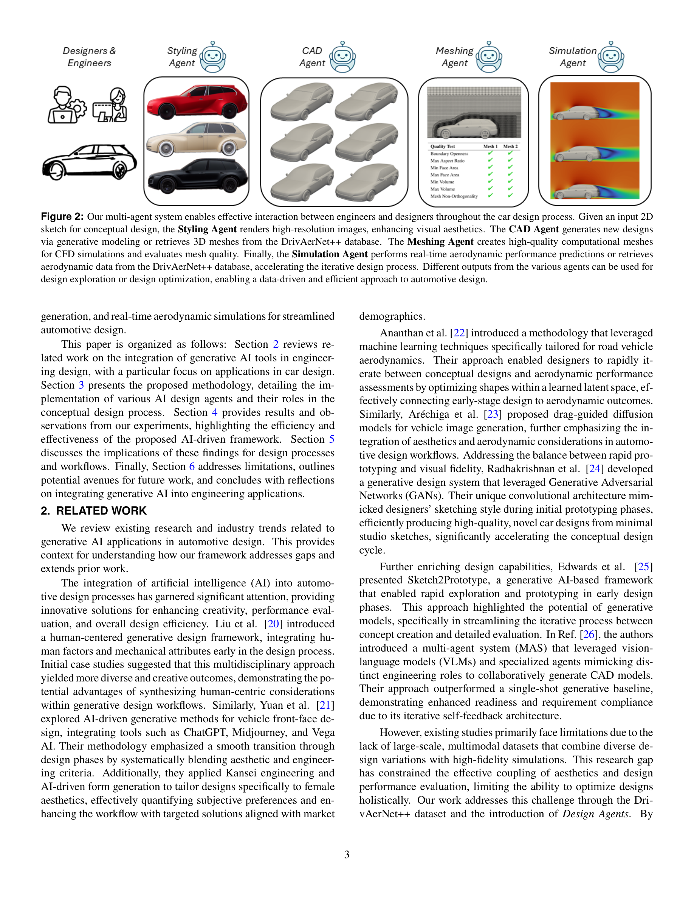
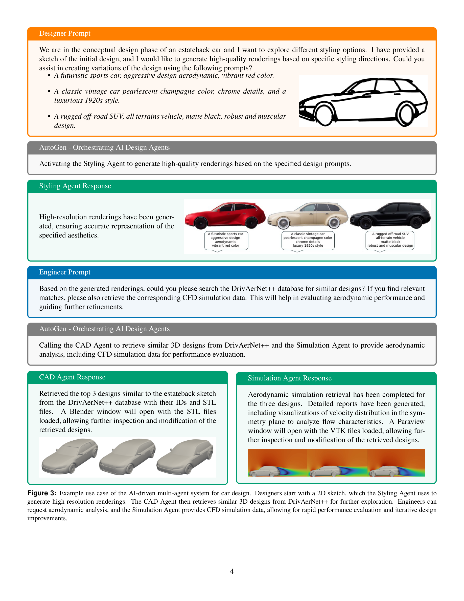
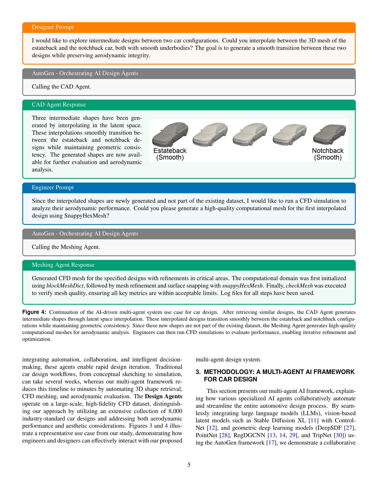
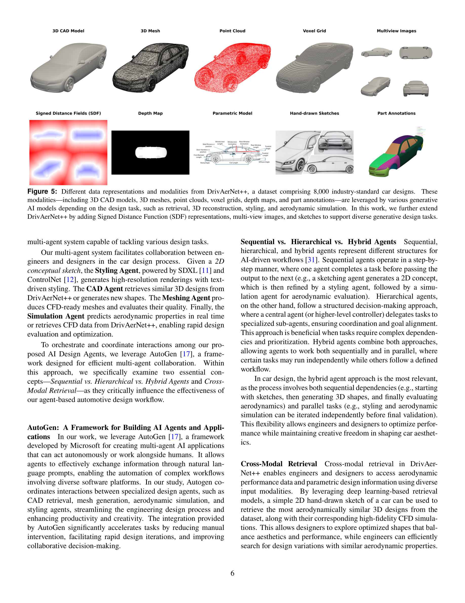

Figure 1
자동차 설계 프로세스에 AI "Design Agents"를 도입하여, 컨셉 스케치에서 스타일링, 3D 형상 검색/생성, CFD 메싱, 공기역학 시뮬레이션까지의 전 과정을 자동화하는 멀티에이전트 프레임워크를 제안한 연구이다. Vision-Language Model(VLM), LLM, 기하학적 딥러닝(DeepSDF, PointNet, RegDGCNN, TripNet)을 AutoGen 프레임워크로 오케스트레이션하여, 기존 수 주~수 일 소요되던 설계 반복 주기를 수 분 단위로 단축하며, 8,000개의 산업 표준 자동차 설계를 포함하는 DrivAerNet++ 데이터셋을 기반으로 실용적 결과를 도출하였다.

Figure 2
자동차 설계는 공학적 성능(공기역학)과 미적 매력(스타일링)을 동시에 균형 맞추어야 하는 다학제적 과정이다. 전통적 워크플로우는 반복적인 스케치-평가-수정 사이클로 이루어지며, 각 단계(CFD 메시 생성, 시뮬레이션 등)에 상당한 시간과 전문 인력이 필요하다. 기존 연구들은 주로 설계의 개별 단계(이미지 생성, 형상 최적화 등)에 AI를 적용했으나, 대규모 멀티모달 데이터셋이 부족하여 미학과 성능 평가를 통합적으로 연결하는 데 한계가 있었다. 본 연구는 DrivAerNet++ 데이터셋과 멀티에이전트 시스템을 결합하여 이 격차를 해소하고자 했다.

Figure 3
Simulation Agent: TripNet 서로게이트 모델을 활용한 실시간 공기역학 예측 (항력계수 등)
정량적 검증 결과:
3회 반복 메시 품질 검증: 모든 기하/위상 품질 지표(비직교성, 왜도, 종횡비 등) 통과
DrivAerNet++ 데이터셋 확장: SDF 표현, 멀티뷰 이미지, 스케치 데이터를 추가하여 8,000개 산업 표준 설계의 멀티모달 데이터셋 확장.

Figure 4

Figure 5
| 항목 | 점수 (5점 만점) | 비고 |
|---|---|---|
| 참신성 (Novelty) | 4.0 | 엔드투엔드 설계 에이전트 통합은 독창적이나, 개별 구성요소는 기존 모델 활용 |
| 기술적 완성도 (Soundness) | 3.5 | 서로게이트 모델 검증은 견고하나, 메시/스타일 평가가 불완전 |
| 실용성 (Practicality) | 4.5 | 산업 표준 도구(OpenFOAM, Blender)와의 직접 연동으로 높은 실용적 가치 |
| 데이터셋 기여 (Dataset) | 4.5 | 8,000개 산업 표준 설계 + 멀티모달 확장은 매우 귀중한 자원 |
| 표현 (Presentation) | 4.0 | 대화형 사용 사례(Figure 3, 4, 10)가 직관적이고 명료 |
| 종합 (Overall) | 4.0 | 공학 설계에서 AI 에이전트의 실용적 가능성을 설득력 있게 보여주는 연구 |
AI 에이전트를 자동차 설계의 전체 파이프라인에 통합한 실용적이고 야심 찬 연구이다. 특히 자연어 기반 인간-AI 협업 워크플로우와 DrivAerNet++의 대규모 산업 표준 데이터셋은 이 분야의 중요한 기여이다. 개별 에이전트(Styling, CAD, Meshing, Simulation)가 각각 견고한 기술적 기반 위에 구축되어 있으며, 설계 반복 주기를 수 주에서 수 분으로 단축한다는 점에서 실질적 가치가 높다. 다만, 생성된 설계의 미적 품질에 대한 사용자 평가와 실제 시뮬레이션/실험 데이터와의 교차 검증이 보완되면 더욱 설득력 있는 연구가 될 것이다. 공학 설계 자동화의 미래를 엿볼 수 있는 의미 있는 프레임워크 제안이다.